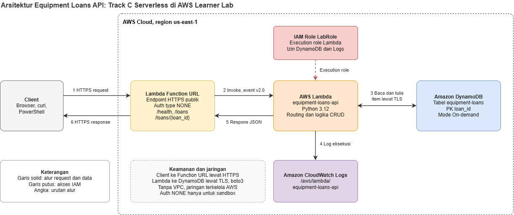
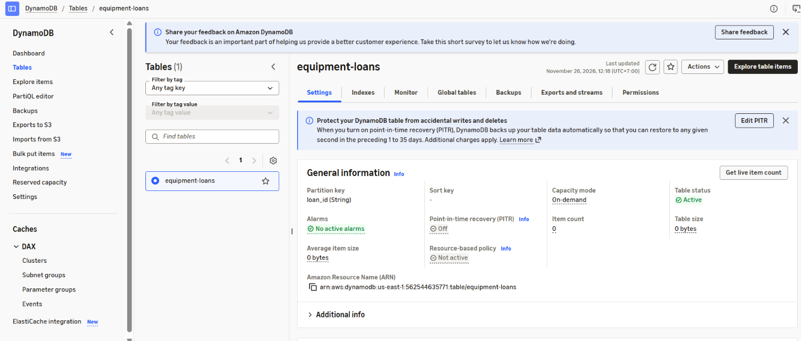
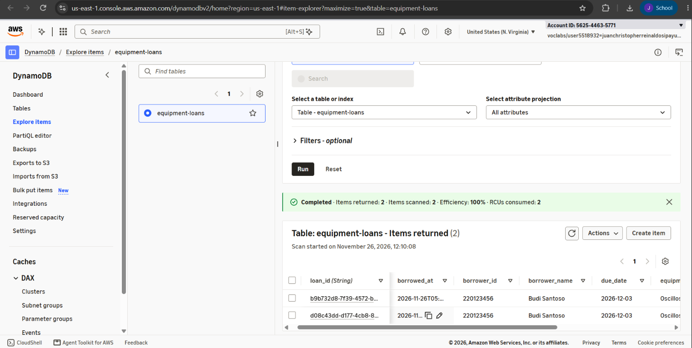
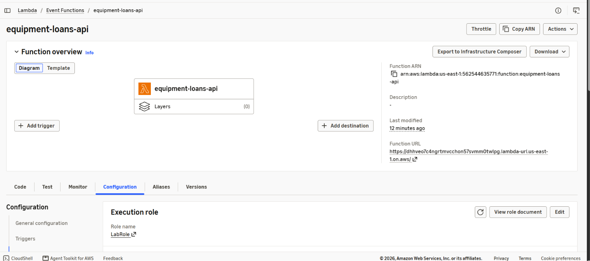
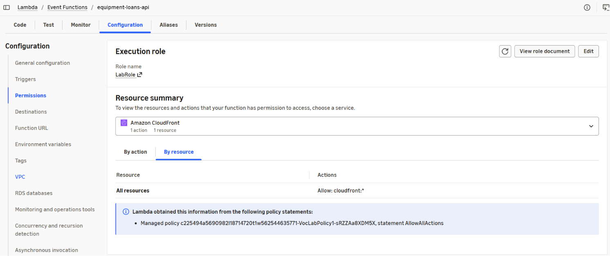
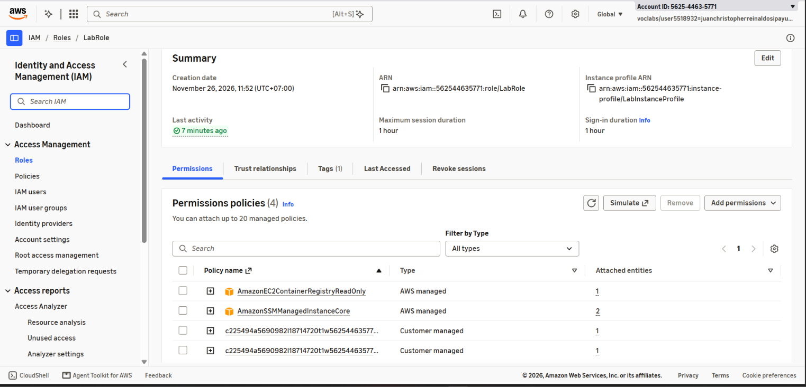
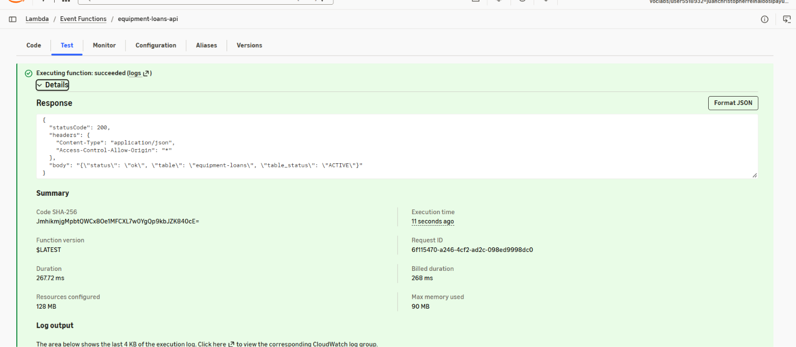

/loans menampilkan JSON dengan 2 item peminjaman.| Nama | Juan Christopher Reinaldo Sipayung (24/544528/TK/60526) |
| Mata Kuliah | AWS Cloud Computing |
| Proyek | Equipment Loans API, sistem peminjaman alat laboratorium |
| Track | Track C Serverless: Lambda Function URL, AWS Lambda, dan Amazon DynamoDB |
| Region | us-east-1 (AWS Learner Lab) |
| Repository | https://github.com/juancrcr/Project-aws |

Alur pada diagram:
voclabs membatasi apigateway:POST, sehingga API Gateway tidak dapat dibuat.equipment-loans-api, yang melakukan routing untuk /health dan operasi CRUD /loans.LabRole yang memiliki akses dynamodb:* di us-east-1. Saat /health dipanggil pertama kali, Lambda membuat tabel DynamoDB equipment-loans secara otomatis./aws/lambda/equipment-loans-api.LabRole, tanpa kredensial yang ditanam di kode.NONE dan CORS * agar mudah diuji di sandbox. Risikonya: endpoint dapat diakses siapa saja yang mengetahui URL-nya. Pada tahap berikutnya autentikasi akan ditambahkan (auth type AWS_IAM atau API Gateway dengan authorizer) dan CORS dibatasi.Sistem mencatat peminjaman alat laboratorium seperti oscilloscope, multimeter, dan perangkat jaringan melalui endpoint HTTP. Track C Serverless dipilih karena setup cepat untuk sesi sandbox 3 jam, biaya rendah dengan skema bayar sesuai pemakaian, dan tidak memerlukan konfigurasi VPC atau RDS manual.
Data disimpan pada tabel DynamoDB equipment-loans (partition key loan_id, mode On-demand).
| Atribut | Tipe | Keterangan |
|---|---|---|
| loan_id | String | Partition key, UUID v4 yang dibuat otomatis saat POST |
| borrower_name | String | Nama peminjam |
| borrower_id | String | NIM atau ID peminjam |
| equipment_name | String | Nama alat |
| quantity | Number | Jumlah unit, minimal 1 |
| status | String | BORROWED saat dibuat, RETURNED saat dikembalikan |
| borrowed_at | String | Waktu pinjam, ISO 8601 UTC |
| due_date | String | Batas tanggal kembali, YYYY-MM-DD |
| returned_at | String | Terisi otomatis saat status menjadi RETURNED |
| Method | Path | Operasi | Fungsi |
|---|---|---|---|
| GET | /health | Health Check | Cek status Lambda dan tabel DynamoDB |
| POST | /loans | Create | Catat peminjaman alat baru, respons 201 |
| GET | /loans | Read (list) | Ambil semua data peminjaman |
| GET | /loans/{loan_id} | Read (detail) | Ambil satu data berdasarkan loan_id |
| PUT | /loans/{loan_id} | Update | Ubah status, due_date, atau quantity; returned_at terisi otomatis saat status RETURNED |
| DELETE | /loans/{loan_id} | Delete | Hapus data peminjaman |
Repository: https://github.com/juancrcr/Project-aws, dengan riwayat commit bertahap. Isi utama:
README.md: komponen, daftar endpoint, struktur repo, dan cara deploy.src/lambda_function.py: handler Lambda untuk CRUD dan health check.src/local_test.py: unit test offline, 3 dari 3 test lulus (health check, siklus CRUD penuh, validasi input).scripts/: setup-aws.ps1, setup-aws.sh (deploy) dan save-evidence.ps1 (uji CRUD live dan backup).docs/: diagram arsitektur dan laporan ini. evidence/: output uji, backup DynamoDB, dan screenshot.Deployment plan setiap sandbox reset:
scripts/setup-aws.ps1 untuk mengemas kode, membuat atau memperbarui Lambda equipment-loans-api dengan LabRole, mengaktifkan Function URL, dan memanggil /health. Panggilan pertama membuat tabel DynamoDB equipment-loans.scripts/save-evidence.ps1 untuk menguji /health dan seluruh CRUD, lalu menyimpan hasil dan backup tabel ke folder evidence.Pengujian live dilakukan pada AWS Learner Lab di region us-east-1. Screenshot konsol (Bukti 1–7) diambil pada sesi awal (https://dhhveo7c4ngrtmvcchon57svmm0twlpg.lambda-url.us-east-1.on.aws), sedangkan pengujian siklus CRUD penuh (Bukti 8) dijalankan ulang melalui script otomasi setelah sesi sandbox berikutnya aktif (https://77rrmmovdyzjfo7wajyowsvwcm0dmyus.lambda-url.us-east-1.on.aws), sekaligus membuktikan desain bersifat reproducible lintas reset sandbox.

equipment-loans berstatus Active, partition key loan_id (String), mode On-demand. Item count 0 karena DynamoDB memperbarui hitungan sekitar setiap 6 jam; jumlah item sebenarnya terlihat pada Bukti 2.




/health berhasil, statusCode 200, table_status ACTIVE./loans menampilkan JSON dengan 2 item peminjaman.Isi lengkap file evidence/aws-evidence-20261126-214955.txt yang mencakup GET /health, POST /loans (Create), GET /loans (Read list), GET /loans/{id} (Read detail), PUT /loans/{id} (Update status menjadi RETURNED + pengisian otomatis returned_at), DELETE /loans/{id} (Delete), dan verifikasi 404 Not Found setelah penghapusan:
=== AWS LEARNER LAB EVIDENCE (20261126-214955) ===
Invoke URL : https://77rrmmovdyzjfo7wajyowsvwcm0dmyus.lambda-url.us-east-1.on.aws
--- 1. Health check (GET /health) ---
{
"status": "ok",
"table": "equipment-loans",
"table_status": "ACTIVE"
}
--- 2a. Create sample tetap (POST /loans) ---
{
"message": "Loan created",
"item": {
"loan_id": "9a9b8f20-1fed-49e8-9b49-49b7aceb179e",
"borrower_name": "Budi Santoso",
"borrower_id": "220123456",
"equipment_name": "Oscilloscope Rigol DS1054Z",
"quantity": 1,
"status": "BORROWED",
"borrowed_at": "2026-11-26T14:50:01.051205+00:00",
"due_date": "2026-12-03"
}
}
--- 2b. Create untuk siklus CRUD (POST /loans) ---
{
"message": "Loan created",
"item": {
"loan_id": "955eba62-9b78-46af-a1f1-2bb4b9d3237a",
"borrower_name": "Siti Aminah",
"borrower_id": "240544528",
"equipment_name": "Digital Multimeter Fluke 117",
"quantity": 2,
"status": "BORROWED",
"borrowed_at": "2026-11-26T14:50:01.634407+00:00",
"due_date": "2026-12-05"
}
}
--- 3. Read list (GET /loans) ---
{
"count": 2,
"items": [
{
"quantity": 1,
"equipment_name": "Oscilloscope Rigol DS1054Z",
"borrowed_at": "2026-11-26T14:50:01.051205+00:00",
"status": "BORROWED",
"borrower_id": "220123456",
"borrower_name": "Budi Santoso",
"due_date": "2026-12-03",
"loan_id": "9a9b8f20-1fed-49e8-9b49-49b7aceb179e"
},
{
"quantity": 2,
"equipment_name": "Digital Multimeter Fluke 117",
"borrowed_at": "2026-11-26T14:50:01.634407+00:00",
"status": "BORROWED",
"borrower_id": "240544528",
"borrower_name": "Siti Aminah",
"due_date": "2026-12-05",
"loan_id": "955eba62-9b78-46af-a1f1-2bb4b9d3237a"
}
]
}
--- 4. Read by id (GET /loans/955eba62-9b78-46af-a1f1-2bb4b9d3237a) ---
{
"item": {
"quantity": 2,
"equipment_name": "Digital Multimeter Fluke 117",
"borrowed_at": "2026-11-26T14:50:01.634407+00:00",
"status": "BORROWED",
"borrower_id": "240544528",
"borrower_name": "Siti Aminah",
"due_date": "2026-12-05",
"loan_id": "955eba62-9b78-46af-a1f1-2bb4b9d3237a"
}
}
--- 5. Update (RETURNED) (PUT /loans/955eba62-9b78-46af-a1f1-2bb4b9d3237a) ---
{
"message": "Loan updated",
"item": {
"due_date": "2026-12-05",
"borrowed_at": "2026-11-26T14:50:01.634407+00:00",
"status": "RETURNED",
"borrower_id": "240544528",
"loan_id": "955eba62-9b78-46af-a1f1-2bb4b9d3237a",
"returned_at": "2026-11-26T14:50:02.853727+00:00",
"equipment_name": "Digital Multimeter Fluke 117",
"quantity": 2,
"borrower_name": "Siti Aminah"
}
}
--- 6. Delete (DELETE /loans/955eba62-9b78-46af-a1f1-2bb4b9d3237a) ---
{
"message": "Loan deleted",
"loan_id": "955eba62-9b78-46af-a1f1-2bb4b9d3237a"
}
--- 7. Read by id setelah delete (404) (GET /loans/955eba62-9b78-46af-a1f1-2bb4b9d3237a) ---
HTTP 404 : {"error": "Loan not found", "loan_id": "955eba62-9b78-46af-a1f1-2bb4b9d3237a"}
--- 8. DynamoDB table status ---
{
"Name": "equipment-loans",
"Status": "ACTIVE",
"ItemCount": 0
}
Output AWS CLI saat mencoba membuat HTTP API di Learner Lab yang membuktikan alasan teknis pemilihan Lambda Function URL:
$ aws apigatewayv2 create-api --name "equipment-loans-http-api" --protocol-type HTTP --region us-east-1 An error occurred (AccessDeniedException) when calling the CreateApi operation: User: arn:aws:sts::562544635771:assumed-role/voclabs/user5518932=juanchristopherreinaldosipayung@mail.ugm.ac.id is not authorized to perform: apigateway:POST on resource: arn:aws:apigateway:us-east-1::/apis because no identity-based policy allows the apigateway:POST action